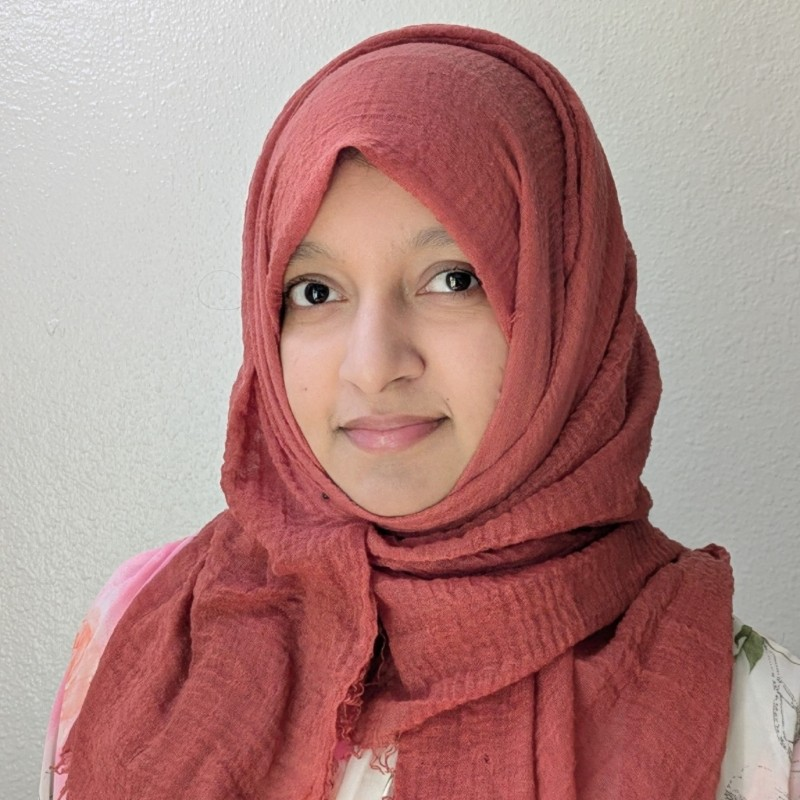

2024–present
Understanding AI agents
Visual representations of agent architectures and workflows, and interactive models that explain how context, loops, and tool use contribute to token usage and computational cost.

PhD student · Computer Science · CU Boulder
I study how people understand and interact with AI. I’m a PhD student in Computer Science at the University of Colorado Boulder, working across agentic AI, human–computer interaction, and machine learning.
My current research uses visual and interactive explanations to make AI agents easier to understand. Previously, I explored parent–child–AI interactions and empathy in technology.
2024–present
Visual representations of agent architectures and workflows, and interactive models that explain how context, loops, and tool use contribute to token usage and computational cost.
2023–2024
Studies of parents and children co-creating stories with ChatGPT, and fNIRS research examining adults’ empathy toward children in AI and cybersecurity scenarios.
ACM Interaction Design and Children · Works in progress
International Conference on Advances in Science, Engineering and Robotics Technology
Data Mining · Fall 2024, 2025, 2026
Computer Vision · Spring & Fall 2023, Spring 2024, 2025
Fundamentals of HCI · Spring 2026
2019–2022 · Courses in image processing, digital systems, programming, and software development.
Graduate peer mentor, TA mentor, and prospective PhD applicant mentor at CU Boulder.
A three-session mini-course on transformer operations, agent tokens, and loop engineering.
A seven-week mini-course exploring protocols, agent evaluation, knowledge graphs, and small language models.
Invited talk at Packt’s Annual Generative AI Conference.
University of Colorado Boulder
2022–present
University of Colorado Boulder
2022–2024
Ahsanullah University of Science and Technology
2015–2019 · Ranked 1st of 152 students
Reviewer for ACM CHI, ACM IDC, the International Journal of Human–Computer Interaction, and WIREs Data Mining and Knowledge Discovery, among others.
I’m always happy to connect about human-centered AI, research, and teaching.
mohsena.ashraf@colorado.edu ↗